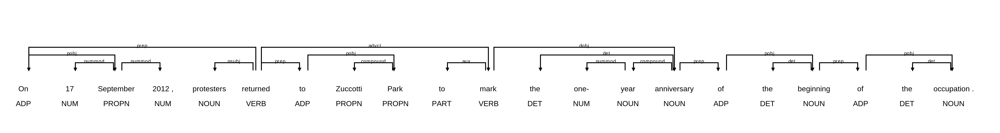

Unidade 3 - Encontrando padrões linguísticos com o spaCy
Agosto de 2026
Esta seção ensina você a encontrar padrões linguísticos usando o spaCy, uma biblioteca de processamento de linguagem natural para Python.
Se você não estiver familiarizado com as anotações linguísticas produzidas pelo spaCy, ou precisar refrescar a memória, revisite a Parte II antes de trabalhar nesta seção.
Ao final deste módulo, você será capaz de:
Anotações linguísticas, tais como etiquetas de classe gramatical, dependências sintáticas e traços morfológicos, ajudam a impor estrutura à linguagem escrita. De maneira crucial, as anotações linguísticas permitem buscar por padrões estruturais em vez de palavras ou expressões individuais. Isso permite definir padrões de busca de forma flexível.
Na biblioteca spaCy, a capacidade de busca por padrões é fornecida por diversos componentes chamados Matchers (algo como “casadores de padrões”).
O spaCy oferece três tipos de Matchers:
As seções a seguir mostram como usar o Matcher para casar objetos Token e suas sequências com base em etiquetas de classe gramatical e traços morfológicos, e como usar o DependencyMatcher para casar dependências sintáticas.
Para começar a trabalhar com o Matcher, vamos importar a biblioteca spaCy e carregar um modelo de linguagem pequeno para o inglês.
# Importa a biblioteca spaCy para o Python
import spacy
# Carrega um modelo de linguagem pequeno para o inglês; atribui o resultado a 'nlp'
nlp = spacy.load('en_core_web_sm')Para termos algum dado com que trabalhar, vamos carregar um texto extraído de um artigo da Wikipédia.
Para isso, usamos a função open() do Python em combinação com a instrução with para abrir o arquivo em modo de leitura, fornecendo os argumentos file, mode e encoding, conforme instruído na Parte II.
Em seguida, chamamos o método read() para ler o conteúdo do arquivo e armazenamos o resultado na variável text.
# Usa a função open() com a instrução 'with' para abrir o arquivo em modo de leitura
with open(file='data/occupy.txt', mode='r', encoding='utf-8') as file:
# Usa o método read() para ler o conteúdo do arquivo; atribui o resultado à
# variável 'text'
text = file.read()Isso devolve um objeto string do Python que contém o artigo em texto puro, agora disponível na variável text.
Em seguida, fornecemos esse objeto ao modelo de linguagem armazenado na variável nlp, conforme instruído na Parte II.
Também usamos a função len() do Python para contar o número de palavras no texto.
# Fornece o objeto string ao modelo de linguagem
doc = nlp(text)
# Usa a função len() para verificar o tamanho do objeto Doc e contar
# quantos Tokens estão contidos nele.
len(doc)14867Agora que temos um objeto Doc do spaCy com quase 15 000 Tokens, podemos prosseguir e importar a classe Matcher do submódulo matcher do spaCy.
# Importa a classe Matcher
from spacy.matcher import MatcherImportar a classe Matcher do submódulo matcher do spaCy nos permite criar objetos Matcher.
Ao criar um objeto Matcher, você precisa fornecer a ele o vocabulário do modelo de linguagem usado para encontrar as correspondências.
A razão para isso é bastante simples: se você quer buscar padrões em algum idioma, primeiro precisa conhecer o vocabulário desse idioma.
O spaCy armazena o vocabulário de um modelo em um objeto Vocab. O objeto Vocab pode ser encontrado no atributo vocab de um objeto Language do spaCy, apresentado na Parte II.
Neste caso, temos o objeto Language que contém um modelo de linguagem pequeno para o inglês armazenado na variável nlp, o que significa que podemos acessar seu objeto Vocab pelo atributo nlp.vocab.
Chamamos então a classe Matcher e fornecemos o vocabulário disponível em nlp.vocab ao argumento vocab para criar um objeto Matcher. Armazenamos o objeto resultante na variável matcher.
# Cria um Matcher e fornece o vocabulário do modelo; atribui o resultado à variável 'matcher'
matcher = Matcher(vocab=nlp.vocab)
# Chama a variável para examinar o objeto
matcher<spacy.matcher.matcher.Matcher at 0x295de8140>O objeto Matcher está agora pronto para armazenar os padrões que queremos buscar.
Esses padrões – ou, mais especificamente, essas regras de padrão – são criados usando um formato específico definido pelo spaCy.
Cada padrão consiste em uma lista Python, que é preenchida por dicionários Python.
Cada dicionário nessa lista descreve o padrão para casar um único Token do spaCy.
Se você deseja casar uma sequência de Tokens, precisa definir múltiplos dicionários dentro de uma única lista, cuja ordem acompanha a do padrão a ser casado.
Vamos começar definindo um padrão simples para casar sequências de pronomes e verbos, e armazenar esse padrão na variável pronoun_verb.
Esse padrão consiste em uma lista, marcada pelos colchetes [], que contém dois dicionários, marcados por chaves {} e separados por vírgula. Os pares de chave e valor em um dicionário são separados por dois-pontos.
Neste caso, definimos um padrão que busca uma sequência de duas etiquetas gerais de classe gramatical (POS), apresentadas na Parte II: pronomes (PRON) e verbos (VERB).
Observe que tanto as chaves quanto os valores devem ser fornecidos em letras maiúsculas.
# Define uma lista com dicionários aninhados que contém o padrão a ser casado
pronoun_verb = [{'POS': 'PRON'}, {'POS': 'VERB'}]Agora que definimos o padrão usando uma lista e dicionários, podemos adicioná-lo ao objeto Matcher armazenado na variável matcher.
Isso pode ser feito com o método add(), que exige duas entradas:
[pattern_1].# Adiciona o padrão ao matcher sob o nome 'pronoun+verb'
matcher.add("pronoun+verb", patterns=[pronoun_verb])Para buscar correspondências no objeto Doc armazenado na variável doc, fornecemos o objeto Doc ao Matcher e armazenamos o resultado na variável result.
Também definimos o argumento opcional as_spans como True, o que instrui o spaCy a devolver os resultados como objetos Span.
Como você deve lembrar da Parte II, objetos Span correspondem a “fatias” contínuas de objetos Doc.
# Aplica o Matcher ao objeto Doc armazenado em 'doc'; fornece o argumento
# 'as_spans' com o valor True para obter Spans como saída
result = matcher(doc, as_spans=True)
# Chama a variável para examinar a saída
result[that expressed,
It aimed,
It formed,
this began,
it organizes,
that read,
who designed,
He wrote,
there were,
They promoted,
It refers,
which started,
that indicate,
that allowed,
they saw,
they argued,
they called,
it takes,
...
that deals,
that believe]A saída é uma lista de objetos Span do spaCy que casam com o padrão solicitado. Vamos examinar o primeiro objeto da lista de correspondências em maior detalhe.
result[0]that expressedO objeto Span possui vários atributos úteis, entre eles start e end. Esses atributos contêm os índices que indicam onde, no objeto Doc, o Span começa e termina.
result[0].start, result[0].end(14, 16)Outro atributo útil é o label, que contém o nome que demos ao padrão. Vamos observá-lo mais de perto.
result[0].label12298179334642351811O número armazenado no atributo label é, na verdade, um objeto Lexeme do spaCy, que corresponde a uma entrada no vocabulário do modelo de linguagem.
Esse Lexeme contém o nome que demos ao padrão de busca acima, ou seja, pronoun+verb.
Podemos verificar isso facilmente usando o valor de result[0].label para buscar o Lexeme no objeto Vocab disponível em nlp.vocab e examinando seu atributo text.
# Acessa o vocabulário do modelo usando colchetes; fornece o valor de 'result[0].label'
# como chave. Em seguida, obtém o atributo 'text' do objeto Lexeme, que contém o
# lexema em forma legível para humanos.
nlp.vocab[result[0].label].text'pronoun+verb'A informação disponível no atributo label é útil para desambiguar entre padrões, especialmente se o mesmo objeto Matcher contiver vários padrões diferentes, como veremos logo adiante.
Olhando para as correspondências acima, o padrão que definimos é bastante restritivo, pois o pronome e o verbo precisam vir imediatamente um após o outro.
Não conseguimos, por exemplo, casar padrões em que o verbo é precedido por verbos auxiliares.
O spaCy permite aumentar a flexibilidade das regras de padrão por meio de operadores.
Esses operadores são definidos adicionando a chave OP ao dicionário que define o padrão de um único Token. O spaCy suporta os seguintes operadores:
!: Nega o padrão; o padrão pode ocorrer exatamente zero vezes.?: Torna o padrão opcional; o padrão pode ocorrer zero ou uma vez.+: Exige que o padrão ocorra uma ou mais vezes.*: Permite que o padrão ocorra zero ou mais vezes.Vamos explorar o uso de operadores definindo outra regra de padrão, que amplia o alcance do nosso Matcher.
Para tanto, definimos um padrão adicional para um Token entre o pronome e o verbo. Esse Token deve ter a etiqueta geral de classe gramatical AUX, que indica um verbo auxiliar:
{'POS': 'AUX', 'OP': '+'}Além disso, acrescentamos outro par de chave e valor ao dicionário desse Token, contendo a chave OP com o valor +. Isso significa que o Token correspondente a um verbo auxiliar deve ocorrer uma ou mais vezes.
Armazenamos a lista resultante com dicionários aninhados na variável pronoun_aux_verb e adicionamos o padrão ao objeto Matcher já existente, armazenado na variável matcher.
# Define uma lista com dicionários aninhados que contém o padrão a ser casado
pronoun_aux_verb = [{'POS': 'PRON'}, {'POS': 'AUX', 'OP': '+'}, {'POS': 'VERB'}]
# Adiciona o padrão ao matcher sob o nome 'pronoun+aux+verb'
matcher.add('pronoun+aux+verb', patterns=[pronoun_aux_verb])
# Aplica o Matcher ao objeto Doc armazenado em 'doc'; fornece o argumento 'as_spans'
# com o valor True para obter Spans como saída. Sobrescreve as correspondências
# anteriores armazenando o resultado na variável 'results'.
results = matcher(doc, as_spans=True)Assim como antes, o Matcher devolve uma lista de objetos Span do spaCy.
Vamos percorrer cada item da lista results. Usamos a variável result para nos referirmos aos objetos Span individuais da lista, que contêm nossas correspondências.
Primeiro recuperamos o objeto Lexeme armazenado em result.label, que mapeamos para o Vocabulário do modelo de linguagem disponível em nlp.vocab.
Como aprendemos acima, esse Lexeme corresponde ao nome que demos à regra de padrão, cuja forma legível para humanos pode ser encontrada no atributo text.
Em seguida, imprimimos um caractere de tabulação para inserir algum espaço entre o nome do padrão e o objeto Span que contém a correspondência.
# Percorre cada objeto Span na lista 'results'
for result in results:
# Imprime o nome da regra de padrão, um caractere de tabulação e o Span correspondente
print(nlp.vocab[result.label].text, '\t', result)pronoun+verb that expressed
pronoun+verb It aimed
pronoun+verb It formed
pronoun+verb this began
pronoun+verb it organizes
pronoun+aux+verb that had resulted
pronoun+verb that read
pronoun+verb who designed
pronoun+verb He wrote
pronoun+verb there were
pronoun+aux+verb they did have
pronoun+verb they saw
pronoun+aux+verb they were working
pronoun+aux+verb which has been gathered
pronoun+aux+verb who had lost
pronoun+aux+verb that can be traced
...
pronoun+aux+verb they have been protesting
pronoun+aux+verb they will have made
pronoun+aux+verb which would overturn
pronoun+verb that believeA saída mostra que o padrão que adicionamos ao Matcher casa com padrões que contêm um (por exemplo, “we can build”) ou mais (por exemplo, “they have been protesting”) auxiliares!
Como apresentado na Parte II, o spaCy também pode realizar análise morfológica, cujos resultados são armazenados no atributo morph de um objeto Token.
O atributo morph contém um objeto string, no qual cada traço morfológico é separado por uma barra vertical |, como ilustrado abaixo.
We Case=Nom|Number=Plur|Person=1|PronType=PrsComo você pode ver, os tipos específicos de traços morfológicos – por exemplo, Case (caso) – e seu valor – por exemplo, Nom (para o caso nominativo) – são separados por sinais de igual =.
Vamos começar a explorar como podemos definir regras de padrão que casam traços morfológicos.
Para começar, criamos um novo objeto Matcher chamado morph_matcher.
# Cria um Matcher e fornece o vocabulário do modelo; atribui o resultado à variável 'morph_matcher'
morph_matcher = Matcher(vocab=nlp.vocab)Definimos então um novo padrão com regras para dois Tokens:
NNP (nome próprio), que pode ocorrer uma ou mais vezes (operador: +).{'TAG': 'NNP', 'OP': '+'}VERB e que apresentam todos os seguintes traços morfológicos (MORPH): Number=Sing|Person=Three|Tense=Pres|VerbForm=Fin.{'POS': 'VERB', 'MORPH': 'Number=Sing|Person=Three|Tense=Pres|VerbForm=Fin'}Definimos o padrão usando dois dicionários em uma lista, que atribuímos à variável propn_3rd_finite.
# Define uma lista com dicionários aninhados que contém o padrão a ser casado
propn_3rd_finite = [{'TAG': 'NNP', 'OP': '+'},
{'POS': 'VERB', 'MORPH': 'Number=Sing|Person=Three|Tense=Pres|VerbForm=Fin'}]Em seguida, adicionamos o padrão ao Matcher recém-criado, armazenado na variável morph_matcher, usando o método add().
Também fornecemos o valor LONGEST ao argumento opcional greedy do método add().
O argumento greedy filtra as correspondências para Tokens que incluem operadores como o +, que buscam de forma gulosa mais de uma correspondência.
Ao definir o valor como LONGEST, o spaCy devolve a sequência mais longa de correspondências, em vez de devolver uma correspondência a cada vez que encontra uma. Em outras palavras, o spaCy coletará todos os Tokens correspondentes antes de devolvê-los.
# Adiciona o padrão ao matcher sob o nome 'sing_3rd_pres_fin'
morph_matcher.add('sing_3rd_pres_fin', patterns=[propn_3rd_finite], greedy='LONGEST')Aplicamos então o Matcher aos dados armazenados na variável doc.
# Aplica o Matcher ao objeto Doc armazenado em 'doc'; fornece o argumento 'as_spans'
# com o valor True para obter Spans como saída. Sobrescreve as correspondências
# anteriores armazenando o resultado na variável 'morph_results'.
morph_results = morph_matcher(doc, as_spans=True)
# Percorre cada objeto Span na lista 'morph_results'
for result in morph_results:
# Imprime o resultado
print(result)Como você pode ver, as correspondências são relativamente poucas, porque definimos que o verbo deveria ter traços morfológicos bastante específicos.
A questão, então, é: como podemos casar apenas alguns traços morfológicos?
Para afrouxar os critérios relativos aos traços morfológicos, concentrando-nos apenas no tempo verbal, precisamos usar um dicionário com a chave MORPH, mas, em vez de um objeto string, fornecemos um dicionário como valor.
Para esse dicionário, usamos a string IS_SUPERSET como chave. IS_SUPERSET é um dos atributos definidos no formato de padrões do spaCy, por exemplo:
{'MORPH': {'IS_SUPERSET': [...]}}Antes de prosseguirmos, vamos desempacotar um pouco a lógica por trás do IS_SUPERSET.
Podemos pensar nos traços morfológicos associados a um dado Token como um conjunto. Para exemplificar, um conjunto poderia consistir nos seguintes quatro itens:
Number=Sing, Person=Three, Tense=Pres, VerbForm=FinSe tivéssemos outro conjunto com apenas um item, Tense=Pres, poderíamos descrever a relação entre os dois conjuntos afirmando que o primeiro conjunto (com quatro itens) é um superconjunto do segundo (com um item).
Em outras palavras, o conjunto maior (superconjunto) contém o conjunto menor (subconjunto).
É assim também que funciona o casamento por meio de IS_SUPERSET: o spaCy recupera os traços morfológicos de cada Token e verifica se esses traços formam um superconjunto dos traços definidos no padrão de busca.
Os traços morfológicos a serem buscados são fornecidos como uma lista de strings do Python.
Essas strings, por sua vez, definem traços morfológicos específicos, como Tense=Past, conforme definido no esquema de Dependências Universais para a descrição da morfologia, apresentado na unidade anterior.
Essa lista é então usada como valor da chave IS_SUPERSET.
Vamos agora buscar verbos no passado e adicioná-los ao objeto Matcher armazenado em morph_matcher.
# Define uma lista com dicionários aninhados que contém o padrão a ser casado
past_tense = [{'TAG': 'NNP', 'OP': '+'},
{'POS': 'VERB', 'MORPH': {'IS_SUPERSET': ['Tense=Past']}}]
# Adiciona o padrão ao matcher sob o nome 'past_tense'
morph_matcher.add('past_tense', patterns=[past_tense], greedy='LONGEST')
# Aplica o Matcher ao objeto Doc armazenado em 'doc'; fornece o argumento 'as_spans'
# com o valor True para obter Spans como saída. Sobrescreve as correspondências
# anteriores armazenando o resultado na variável 'morph_results'.
morph_results = morph_matcher(doc, as_spans=True)Vamos percorrer os resultados e imprimir o nome do padrão, o objeto Span que contém a correspondência e os traços morfológicos do último Token da correspondência, que corresponde ao verbo.
# Percorre cada objeto Span na lista 'morph_results'
for result in morph_results:
# Imprime o nome da regra de padrão, um caractere de tabulação e o Span
# correspondente. Por fim, imprime outro caractere de tabulação, seguido dos
# traços morfológicos do último Token da correspondência (um verbo).
print(nlp.vocab[result.label].text, '\t', result, '\t', result[-1].morph)past_tense Community Environmental Legal Defense Fund released Tense=Past|VerbForm=Fin
past_tense Oakland Police Chief Howard Jordan expressed Tense=Past|VerbForm=Fin
past_tense U.S. Vice President Al Gore called Tense=Past|VerbForm=Fin
past_tense Los Angeles City Council became Tense=Past|VerbForm=Fin
past_tense Judge Jed S. Rakoff sided Tense=Past|VerbForm=Fin
past_tense Prime Minister Manmohan Singh described Tense=Past|VerbForm=Fin
past_tense New York Times reported Tense=Past|VerbForm=Fin
...
past_tense United Nations controlled Aspect=Perf|Tense=Past|VerbForm=Part
past_tense Occupy Glasgow set Aspect=Perf|Tense=Past|VerbForm=Part
past_tense Shapiro filed Tense=Past|VerbForm=FinComo você pode ver, o padrão past_tense consegue casar objetos com base em um único traço morfológico, embora a maioria das correspondências compartilhe também outro traço morfológico, a saber, a forma finita.
Se você quiser casar padrões com base em dependências sintáticas, precisa usar a classe DependencyMatcher do spaCy.
Como aprendemos na Parte II, dependências sintáticas descrevem as relações que se mantêm entre objetos Token.
Para começar, vamos importar a classe DependencyMatcher do submódulo matcher.
Como você pode ver, o DependencyMatcher é inicializado exatamente como o Matcher acima.
# Importa a classe DependencyMatcher
from spacy.matcher import DependencyMatcher
# Cria um DependencyMatcher e fornece o vocabulário do modelo;
# atribui o resultado à variável 'dep_matcher'
dep_matcher = DependencyMatcher(vocab=nlp.vocab)Isso nos fornece um DependencyMatcher armazenado na variável dep_matcher, que está agora pronto para armazenar padrões de dependência.
Ao desenvolver regras de padrão para casar dependências sintáticas, o primeiro passo é determinar uma “âncora” em torno da qual o padrão é construído.
Visualizar as dependências sintáticas, como instruído na Parte II, pode ajudar a formular os padrões.
Vamos importar o submódulo displacy para desenhar as dependências sintáticas de uma sentença do objeto Doc armazenado na variável doc.
# Importa o submódulo displacy do spaCy
from spacy import displacy
# Converte as sentenças contidas no objeto Doc em uma lista; toma a sentença
# no índice 420. Define o atributo 'style' como 'dep' para desenhar as
# dependências sintáticas.
displacy.render(list(doc.sents)[420], style='dep')
Como apresentado na unidade anterior, as dependências sintáticas são visualizadas por meio de arcos que partem do Token cabeça em direção ao Token dependente. O rótulo do arco indica a dependência sintática.
Vamos definir um padrão que busque verbos e seus sujeitos nominais (nsubj).
Assim como no caso da classe Matcher, as regras de padrão do DependencyMatcher são definidas usando uma lista de dicionários.
O primeiro dicionário da lista define o padrão “âncora” e seus atributos.
Você pode pensar na regra de padrão como uma corrente que avança da esquerda para a direita, na qual o primeiro padrão à esquerda funciona como âncora para os padrões subsequentes à sua direita.
Assim, definimos o seguinte padrão para a âncora:
{'RIGHT_ID': 'verb', 'RIGHT_ATTRS': {'POS': 'VERB'}}Usamos a chave obrigatória RIGHT_ID para fornecer um nome a esse padrão, que poderá então ser usado para referenciá-lo a partir de padrões posicionados à sua direita.
Em outras palavras, quando você vir a chave RIGHT_ID, pense em um nome para o padrão atual.
Criamos então um dicionário sob a chave RIGHT_ATTRS que guarda os traços linguísticos da âncora. Neste caso, determinamos que a âncora deve ter VERB como etiqueta de classe gramatical.
Em seguida, determinamos um padrão para o próximo “elo” da corrente, à direita da âncora:
{'LEFT_ID': 'verb', 'REL_OP': '>', 'RIGHT_ID': 'subject', 'RIGHT_ATTRS': {'DEP': 'nsubj'}}Começamos fornecendo a chave LEFT_ID, cujo valor é um objeto string que se refere ao nome de um padrão à esquerda do padrão atual. Esse é o nome que demos à âncora usando a chave RIGHT_ID.
Em seguida, usamos a chave REL_OP para definir um operador relacional, que determina a relação entre este padrão e aquele referenciado por LEFT_ID.
O operador relacional > define que o padrão em LEFT_ID – a âncora – deve ser a cabeça do padrão atual.
Depois, nomeamos o padrão atual com a chave RIGHT_ID, o que permite referenciá-lo à direita, se necessário. Damos a esse padrão o nome subject.
Por fim, usamos RIGHT_ATTRS para determinar os atributos do padrão atual. Definimos que a relação sintática que se mantém entre este padrão e o padrão à sua esquerda deve ser nsubj, ou seja, sujeito nominal.
# Define uma lista com dicionários aninhados que contém o padrão a ser casado
dep_pattern = [{'RIGHT_ID': 'verb', 'RIGHT_ATTRS': {'POS': 'VERB'}},
{'LEFT_ID': 'verb', 'REL_OP': '>', 'RIGHT_ID': 'subject', 'RIGHT_ATTRS': {'DEP': 'nsubj'}}
]Compilamos então esses dois dicionários em uma lista, adicionamos o padrão ao DependencyMatcher armazenado em dep_matcher e buscamos correspondências no objeto Doc doc.
Armazenamos as correspondências resultantes na variável dep_matches e chamamos essa variável para examinar a saída.
# Adiciona o padrão ao matcher sob o nome 'nsubj_verb'
dep_matcher.add('nsubj_verb', patterns=[dep_pattern])
# Aplica o DependencyMatcher ao objeto Doc armazenado em 'doc'; armazena o
# resultado na variável 'dep_matches'.
dep_matches = dep_matcher(doc)
# Chama a variável para examinar a saída
dep_matches[(5549296207297668001, [15, 14]),
(5549296207297668001, [37, 36]),
(5549296207297668001, [53, 52]),
(5549296207297668001, [62, 60]),
(5549296207297668001, [70, 69]),
...
(5549296207297668001, [8004, 8002])]Diferentemente do Matcher, o DependencyMatcher não consegue devolver as correspondências como objetos Span, porque as correspondências não formam necessariamente uma sequência contínua de Tokens, que é o que um objeto Span exige.
Assim, o DependencyMatcher devolve uma lista de tuplas.
Cada tupla contém dois itens:
# Percorre cada tupla na lista 'dep_matches'
for match in dep_matches:
# Toma o primeiro item da tupla, no índice [0], e o atribui à
# variável 'pattern_name'. Esse item é um objeto Lexeme do spaCy.
pattern_name = match[0]
# Toma o segundo item da tupla, no índice [1], e o atribui à
# variável 'matches'. Trata-se de uma lista de índices que se referem ao
# objeto Doc armazenado em 'doc' que acabamos de casar.
matches = match[1]
# Vamos desempacotar a lista 'matches' em variáveis, por clareza
verb, subject = matches[0], matches[1]
# Imprime as correspondências buscando primeiro o nome do padrão no objeto
# Vocabulary. Em seguida, usa as variáveis 'subject' e 'verb' para indexar o
# objeto Doc. Isso nos dá os Tokens efetivamente casados. Usa um caractere de
# tabulação ('\t') e reticências ('...') para separar a saída.
print(nlp.vocab[pattern_name].text, '\t', doc[subject], '...', doc[verb])nsubj_verb that ... expressed
nsubj_verb It ... aimed
nsubj_verb movement ... had
nsubj_verb groups ... had
nsubj_verb concerns ... included
nsubj_verb corporations ... control
nsubj_verb that ... benefited
nsubj_verb It ... formed
nsubj_verb Steger ... called
nsubj_verb Occupy ... began
...
nsubj_verb protests ... began
nsubj_verb protest ... started
nsubj_verb they ... call
nsubj_verb police ... movedIsso nos devolve os verbos e seus sujeitos nominais.
Note que, ao definir regras de padrão para casamento de dependências, você também pode criar novas “correntes” que partem do padrão-âncora.
Por exemplo, para encontrar os objetos diretos (dobj) dos verbos casados acima, não devemos adicionar isso como um elo da corrente já existente, cujo item mais à direita se chama atualmente subject.
Em vez disso, precisamos iniciar uma nova corrente que começa a partir do padrão-âncora verb.
{'LEFT_ID': 'verb', 'REL_OP': '>', 'RIGHT_ID': 'd_object', 'RIGHT_ATTRS': {'DEP': 'dobj'}}Assim como acima, definimos que esse padrão deve estar à direita do padrão verb, iniciando essencialmente uma nova corrente.
Além disso, o padrão verb deve governar esse nó (>) e a relação deve ser dobj. Também nomeamos esse padrão como d_object usando o atributo RIGHT_ID.
Vamos definir um novo padrão e adicioná-lo ao objeto DependencyMatcher.
# Define uma lista com dicionários aninhados que contém o padrão a ser casado
dep_pattern_2 = [{'RIGHT_ID': 'verb', 'RIGHT_ATTRS': {'POS': 'VERB'}},
{'LEFT_ID': 'verb', 'REL_OP': '>', 'RIGHT_ID': 'subject', 'RIGHT_ATTRS': {'DEP': 'nsubj'}},
{'LEFT_ID': 'verb', 'REL_OP': '>', 'RIGHT_ID': 'd_object', 'RIGHT_ATTRS': {'DEP': 'dobj'}}
]
# Adiciona o padrão ao matcher sob o nome 'nsubj_verb_dobj'
dep_matcher.add('nsubj_verb_dobj', patterns=[dep_pattern_2])
# Aplica o DependencyMatcher ao objeto Doc armazenado em 'doc'; armazena o
# resultado na variável 'dep_matches'.
dep_matches = dep_matcher(doc)
# Percorre cada tupla na lista 'dep_matches'
for match in dep_matches:
# Toma o primeiro item da tupla, no índice [0], e o atribui à
# variável 'pattern_name'. Esse item é um objeto Lexeme do spaCy.
pattern_name = match[0]
# Toma o segundo item da tupla, no índice [1], e o atribui à
# variável 'matches'. Trata-se de uma lista de índices que se referem ao
# objeto Doc armazenado em 'doc' que acabamos de casar.
matches = match[1]
# Como agora temos dois padrões de casamento que devolvem listas de
# tamanhos diferentes – por exemplo, listas com dois índices para
# 'nsubj_verb' e listas com três índices para 'nsubj_verb_dobj' –,
# precisamos definir critérios condicionais para tratar essas listas.
if len(matches) > 2:
# Vamos desempacotar a lista 'matches' em variáveis, por clareza
verb, subject, dobject = matches[0], matches[1], matches[2]
# Imprime as correspondências buscando primeiro o nome do padrão no objeto
# Vocabulary. Em seguida, usa as variáveis 'subject' e 'verb' para indexar
# o objeto Doc. Isso nos dá os Tokens efetivamente casados. Usa um caractere
# de tabulação ('\t') e reticências ('...') para separar a saída.
print(nlp.vocab[pattern_name].text, '\t', doc[subject], '...', doc[verb], '...', doc[dobject])
# Condição alternativa, com apenas dois itens na lista.
else:
# Vamos desempacotar a lista 'matches' em variáveis, por clareza
verb, subject = matches[0], matches[1]
# Imprime as correspondências buscando primeiro o nome do padrão no objeto
# Vocabulary. Em seguida, usa as variáveis 'subject' e 'verb' para indexar
# o objeto Doc. Isso nos dá os Tokens efetivamente casados.
print(nlp.vocab[pattern_name].text, '\t', doc[subject], '...', doc[verb])Como a saída mostra, o padrão nsubj_verb_dobj devolve tanto os sujeitos nominais quanto os objetos diretos dos verbos, que definimos usando diferentes “correntes” do padrão.
Poderíamos facilmente acrescentar outra corrente ao padrão-âncora – por exemplo, para buscar sintagmas preposicionais – ou adicionar mais elos a qualquer uma das correntes existentes para buscar traços mais refinados.
Podemos examinar as correspondências em seu contexto de ocorrência usando concordâncias. Na linguística de corpus, concordâncias são frequentemente entendidas como linhas de texto que exibem uma correspondência em seu contexto de ocorrência.
Essas linhas de concordância podem ajudar a compreender por que e como um determinado token ou estrutura é usado em um dado contexto.
Para criar linhas de concordância com o spaCy, vamos começar importando a classe Printer da wasabi, uma pequena biblioteca Python que o spaCy usa para colorir e formatar mensagens. Usaremos a wasabi para destacar as correspondências nas linhas de concordância.
Primeiro inicializamos um objeto Printer, que atribuímos à variável match. Em seguida, testamos o objeto Printer imprimindo algum texto na cor vermelha.
# Importa a classe Printer da wasabi
from wasabi import Printer
# Inicializa um objeto Printer; atribui o objeto à variável 'match'
match = Printer()
# Usa o Printer para imprimir um texto na cor vermelha
match.text('Hello world!', color='red')Prosseguimos então percorrendo os resultados devolvidos pelo objeto Matcher morph_matcher. Como aprendemos acima, os resultados consistem em objetos Span dentro de uma lista, armazenados na variável morph_results.
Percorremos os itens dessa lista e usamos a função enumerate() para manter a contagem. Também fornecemos o argumento start com o valor 1 à função enumerate(), para que a contagem comece no número 1.
Durante o laço, nos referimos a essa contagem pela variável i e ao objeto Span como result. O número em i é incrementado a cada objeto Span.
Imprimimos então a seguinte saída para cada objeto Span da lista morph_results:
i: o número do item na lista.doc[result.start - 7: result.start]: uma fatia do objeto Doc armazenado na variável doc, no qual buscamos as correspondências. Como de costume, definimos uma fatia usando colchetes e separamos o início e o fim da fatia por dois-pontos. Tomamos uma fatia que começa 7 Tokens antes do início da correspondência (result.start - 7) e termina no início da correspondência (result.start).match.text(result, color="red", no_print=True): o objeto Span correspondente, renderizado em vermelho pelo objeto Printer da wasabi armazenado em match. Também definimos o argumento no_print como True, para impedir que a wasabi imprima a saída em uma nova linha.doc[result.end: result.end + 7]: outra fatia do objeto Doc armazenado na variável doc. Aqui tomamos uma fatia que começa no fim da correspondência (result.end) e termina 7 Tokens após o fim da correspondência (result.end + 7).Em essência, usamos os índices disponíveis nos atributos start e end de cada Span para recuperar o contexto linguístico em que o Span ocorre.
# Percorre as correspondências em 'morph_results' e mantém a contagem dos itens
for i, result in enumerate(morph_results, start=1):
# Imprime as seguintes informações para cada correspondência
print(i, # Número do item sendo percorrido
doc[result.start - 7: result.start], # A fatia do Doc que precede a correspondência
match.text(result, color='red', no_print=True), # A correspondência, em vermelho, via wasabi
doc[result.end: result.end + 7] # A fatia do Doc que sucede a correspondência
)Isso devolve um conjunto de linhas de concordância que destacam as correspondências em seu contexto de ocorrência.
Note que, em alguns casos, os Tokens precedentes ou seguintes consistem em quebras de linha que indicam mudança de parágrafo, o que faz a saída pular uma ou duas linhas.
Esta seção deve ter lhe dado uma ideia de como buscar estruturas correspondentes nas anotações linguísticas usando o spaCy.
Na próxima seção, você será apresentado aos word embeddings, uma técnica para aproximar o significado das palavras.